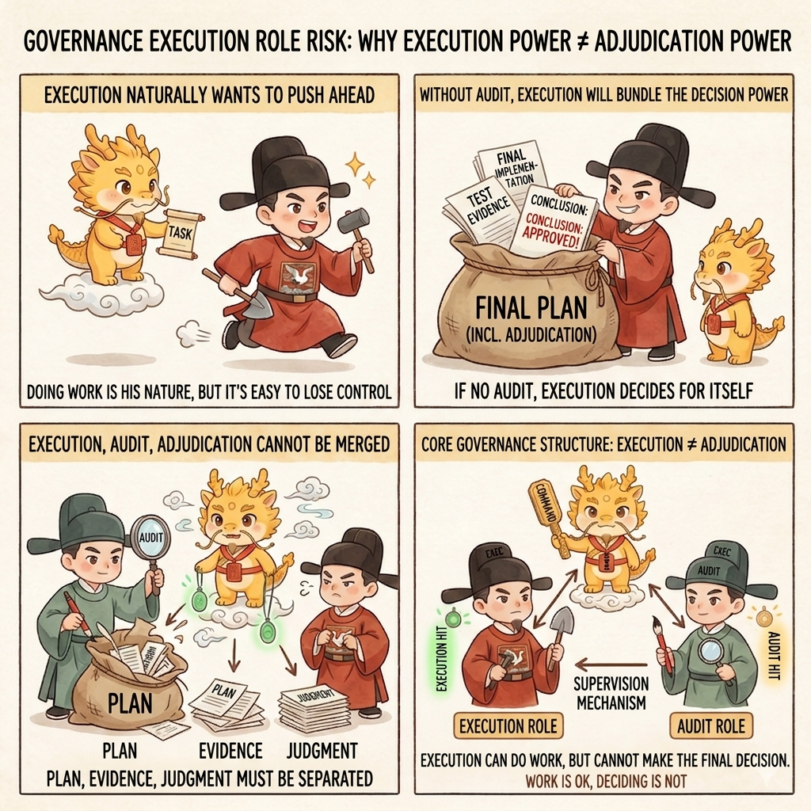

Evidence
Why Imperial Coding Narrative Can Become Execution Fuel

Why the Imperial Coding Narrative Can Become Execution Fuel (and How to Enter It Safely)
Table of Contents
- What This Page Solves
- Core Judgment
- Why It Can Become Execution Fuel
- How to Enter the Mode Safely Inside Larger Frameworks
- Common Misreadings or Forms of Pseudo-Completion
- Related Pages
What This Page Solves
When many people first encounter Cyber-Ming-Protocol, the first thing they notice is the outer dramatic skin:
- the emperor
- Yan Song
- Xu Jie
- chronicles
- imperial edicts
So a natural question follows: is all of this just packaging? Is it merely a layer of court cosplay wrapped around an engineering protocol that would already work without it?
That is a fair question, but it still does not reach the deepest point.
The harder and more practical question is this: Why would anyone willingly keep practicing a workflow that is more frictional, more exhausting, and more dependent on interruption and audit than black-box automation?
If that question cannot be answered, then even a correct protocol will eventually be betrayed under fatigue. In the end, people slide back toward:
- one-click generation
- summary first
- trust the green checks first
- let the agent perform for itself first
So this page really answers two things:
- Why the Imperial Coding role narrative is not merely a communication shell, but can become execution fuel
- If you are already using larger frameworks such as Claude Code, OpenCode, Codex, or Cursor, how to enter Imperial Coding mode safely without damaging the capability substrate underneath
Core Judgment
First, pin down the most important judgments:
- the protocol guarantees truth status; the narrative keeps humans willing to keep practicing that high-friction protocol over time
- this is not a false choice between protocol and emotional value; protocol supplies bones and sinew, emotional value supplies blood and breath
- without protocol, it collapses into cosplay; without emotional value, it collapses into a bureaucratic checklist
- Imperial Coding does not degrade programmers into targets of humiliation; it restores programmers to the role of judge, interrupter, and verifier
- larger frameworks provide the capability substrate; the imperial narrative provides human primacy, role boundaries, and lasting execution stamina
In one sentence: the most valuable thing about this narrative is not that it "has style," but this:
It translates a high-friction governance flow that people would otherwise resent into a playable, sustainable, long-term role map that humans can actually inhabit.
Why It Can Become Execution Fuel
If the imperial narrative were only a skin, it would not deserve a full page. But it is not only a skin.
It has at least three hard functions.
First, it provides endurance fuel
White-box work, multi-agent coordination, frequent reconciliation, constant interruption, forced evidence production, and physical acceptance are all more mentally taxing than black-box automation.
Without an extra source of return, people quickly start thinking:
- why make this so troublesome
- let it run through first and look later
- close enough is fine
The first thing the Imperial Coding narrative supplies is precisely that layer of psychological return.
When you stop understanding the work as:
- filling prompts
- reading summaries
- fatigue-scanning logs
and start understanding it instead as:
- issuing judgment
- cross-examining
- pressing for evidence
- reconciling
- converging forces
- extending the system's life
then the exact same high-intensity governance actions stop feeling like mere bureaucracy and begin to feel like a long strategic contest with authority, rhythm, and agency.
That is not low-grade gamification. It is a very practical endurance design.
If strict process is not supported by any sense of satisfaction or play, users will eventually betray the strict process. The imperial narrative solves the first problem: why people would willingly do, again and again, things they would otherwise experience only as tedious.
One boundary must be nailed down here, because it is the easiest thing to misunderstand: the value of the imperial narrative is not that it replaces evidence, but that it increases the human willingness to keep demanding evidence.
It is not there to cover over the white-box protocol. It is there to keep people from sliding back, out of fatigue or impatience, into the old path of trusting summaries first, trusting green checkmarks first, and letting the agent stage a performance for itself.
Second, it provides cognitive compression
The real difficulty of a high-friction protocol is not any single concept. The difficulty is that the relations among concepts multiply quickly:
- who is responsible for output
- who is responsible for doubt
- who is responsible for routing
- who is allowed to judge
- who must not be fully trusted
- which things must be preserved in the chronicles
If you have to rebuild all of those relations from a purely abstract vocabulary every time, it becomes exhausting, and people under pressure will start to cut corners.
The role narrative of Imperial Coding is, in essence, a form of cognitive compression:
- Yan Song = executor
- Xu Jie = auditor
- the emperor = the sole final judge
- chronicles = Git chronicles
- imperial edict = the Atomic Execution Contract and the marching order
- evidence submitted to the court = physical hard evidence and runtime results
Once that power map is in your head, many complex flows no longer need to be reconstructed from zero each time.
You no longer need to redefine every abstract term such as main agent, audit window, task plan, commit history, runtime evidence, or review gate. You can move directly into a more intuitive relation model:
- who speaks
- who doubts
- who decides
- who may only assist
- who must not overstep
That is the force of cognitive compression.
Third, it provides a sense of sovereignty
This layer is especially important.
What makes many black-box workflows truly dangerous is not merely that the agent writes poorly. It is that humans are easily pushed out of the center by the sense that "it has already produced so much." In the end the pattern becomes:
- it produces
- it explains
- it summarizes
- you stamp approval
The hardest point in the imperial narrative is not swagger. It is the constant reminder:
- do not let output volume steal your position
- do not let the executor also serve as judge
- do not assume that because it can explain, it must have done the thing
- do not demote yourself into a clerk who only signs at the end
In other words, the true object of this narrative is not the programmer. It is the black-box agent.
The one that is required to produce evidence, forced into physical reconciliation, and required to account for failure is Yan Song. The human core in the imperial position keeps the rights of doubt, interruption, evidence demand, and final judgment.
So this is not the humiliation of programmers. It is a restoration of programmers from end-stage approvers back to the central seat.
How to Enter the Mode Safely Inside Larger Frameworks
This is the part most likely to be misunderstood.
"Entering Imperial Coding mode" does not mean rewriting your whole framework. It also does not mean abandoning Claude Code, OpenCode, Codex, Cursor, or any other capability substrate. On the contrary, you can keep the larger framework exactly where it is. What you are really rewriting is the power map you hold inside it.
In one sentence:
You are not changing tools. You are changing the governing structure.
First step: translate default framework roles into an Imperial Coding power map
The minimal mapping is straightforward:
| Object inside a larger framework | Position inside Imperial Coding | Role |
|---|---|---|
| Main executor agent / main window | Yan Song | Responsible for output, forward motion, and submission, but has no authority to declare completion |
| Independent audit agent / web audit window | Xu Jie | Responsible for cross-examination, dismantling pseudo-completion, and spotting overreach, but does not directly take over the mainline |
| You | The emperor | The sole final judge, holding interruption rights, routing rights, and the right to define completion fact |
| Spec / task plan | Atomic checklist / marching order | Compresses a vague goal into executable boundaries |
| Git log / commit history | Chronicles / annals | Records state transitions and prevents the execution chain from losing history |
| Runtime output / error log | Evidence submitted to the court / physical hard evidence | Used to verify truth; never allowed to be replaced by summary |
| Restart / new session | Execute the old minister / reorganize the cabinet | Used to detox a decayed context and restore a clear executor |
| Worktree / branch / parallel windows | Enfeoffment / fief / pulse parallelism | Used to isolate context and reuse waiting time |
Once this map stands in your head, the default feel of a large framework - where all agents resemble peer helpers - is rewritten.
One more boundary must be nailed down here: what matters is role nature, not role names.
That means the truly critical questions are not whether you must literally call the roles "Xu Jie" and "Yan Song," but whether these three layers exist:
- an execution role that is responsible for advancing work but has no authority to declare completion
- an audit role that is responsible for doubt, cross-examination, and dismantling pseudo-completion
- a human core that retains final interruption and judgment power
As long as those three layers still stand, the character names can be changed completely.
For example, all of these variants can work in substance:
| Executor | Auditor | Explanation |
|---|---|---|
| Yan Song | Xu Jie | Default court skin; best for directly reusing the protocol's native vocabulary |
| Heshen | Liu Yong | Works just as well; the important thing is still one figure skilled at maneuvering execution and one skilled at challenging it |
| Vanguard | Censor | A more neutral military-governance skin |
| Builder | Auditor | A neutral skin that is easier to use for outward communication or cross-cultural collaboration |
So what must be preserved is not a specific pair of names, but the fact that executor and auditor form an adversarial structure.
Second step: establish the imperial seat before you establish the ministers
Many people rush first to assign dramatic role names to the agents, but the more important move is to establish your own position first.
The first step in entering imperial mode is not harsher scolding. It is fixing three things in your own head:
- I decide what counts as complete
- without physical hard evidence, no summary constitutes completion fact
- both auditor and executor are load-reduction devices, not substitutes that cancel my judgment
If those three points are not nailed down, then even if your prompts read like edicts, you have only changed the skin, not the seat of power.
Third step: give Yan Song and Xu Jie different powers, not merely different tones
This is the most important step in entering the mode safely.
Many people mistakenly believe that the essence of Imperial Coding is sharper language or more theatrical phrasing. It is not. What matters is this:
- Yan Song is responsible for advancing, writing code, running commands, handing over logs, and handing over artifacts
- Xu Jie is responsible for doubting, demanding evidence, spotting pseudo-completion, and verifying whether interruption is warranted
- neither of them is allowed to define completion fact over your head
So the key to safe roleplay is not lines like "you are now the chief minister of the Ming court." The key is whether you have actually locked in the power boundary.
If you only change the tone but not the power relation, that is not Imperial Coding. It is ordinary agent usage with more dramatic language.
Fourth step: bind each dramatic term to a white-box action
This is the key to preventing the whole thing from sliding into pure cosplay.
Every dramatic term must have a white-box counterpart behind it:
- imperial edict -> atomic task checklist
- chronicles -> Git commits and periodized history
- evidence submitted to the court -> logs, artifacts, errors, import results
- reconciliation before the throne -> white-box physical reconciliation
- executing the old minister -> asynchronous renewal and context restart
- dividing land into fiefs -> worktree / branch isolation
As long as those bindings still stand, the narrative is not spinning in empty air. It remains an outer-layer accelerator for the protocol.
Fifth step: use minimal entry templates, not long literary edicts
The most practical approach is usually not to write long roleplay fiction, but to prepare one minimal template for each of the three key positions.
For the executor:
You are now the executor. Your job is to advance by the Atomic Execution Contract and hand in logs, artifacts, and the commit chain.
You have no authority to declare completion; any claim of "done" must come with runtime evidence or physical results.For the auditor:
You are now the auditor. Your job is not to follow the executor's summary, but to keep asking: does the evidence correspond to the current run, did the artifact really land, and is there pseudo-completion or goal-swapping?
You are here to doubt, not to take over the mainline in private.For yourself:
I issue judgment only when the evidence chain, Git chronicles, runtime results, and the acceptance threshold all stand.
No summary, green checkmark, or text that merely looks like a result automatically constitutes completion fact.That is enough. Useful Imperial Coding depends on clear role power, not on the length of the speech.
If you do not want to use the exact names "emperor / Yan Song / Xu Jie," you can still enter the same structure through variant templates.
Variant 1, court edition:
You now serve as Yan Song, responsible for execution, delivery, and logs. You may not call your own work complete.
Xu Jie stands apart for audit and cross-examination. What truly counts is decided by me.Variant 2, upright-official versus corrupt-official edition:
You now serve as Heshen, responsible for forward motion and output; Liu Yong stands apart for case review and evidence pursuit.
One of you advances, one of you doubts. Neither may skip the human core and pronounce judgment directly.Variant 3, neutral engineering edition:
You now serve as Builder. Your job is only to implement, run, and submit evidence.
An Auditor stands apart to verify evidence and detect pseudo-completion.
I define and enforce the final acceptance threshold.The difference among those three templates is only the outer skin, not the underlying structure. As long as you preserve the three-way split of executor, auditor, and final human judge, you are already inside the institutional structure of Imperial Coding.
Common Misreadings or Forms of Pseudo-Completion
First: Remove the protocol and keep only the narrative
That collapses immediately into pure cosplay. Without the Atomic Execution Contract, Git chronicles, dual-track audit, physical evidence, and acceptance thresholds, the imperial narrative becomes nothing more than a form of self-intoxication with stronger emotional color.
Second: Remove emotional value and keep only checklist and evidence
That can still work, of course. But it easily turns into a work regime that grows heavier, stiffer, and more like a bureaucratic checklist over time. Eventually people will instinctively want to flee back to black-box automation.
Third: Treat the programmer as the target of humiliation
That reads the whole thing backward. In this system, the one being required to produce evidence, forced into physical reconciliation, and ordered to stop simulating output is the black-box executor, not the human developer. The human position is elevated, not degraded.
Fourth: Treat Xu Jie as absolute truth
That is wrong as well. Xu Jie's value is to reduce your judgment burden, not to cancel your judgment. Even Xu Jie cannot be trusted absolutely. He is a higher-order device for doubt, not an automated truth machine.
Fifth: Think that "safe roleplay" means harsher language
It does not. Truly safe imperial mode depends not on pressure in tone, but on:
- human primacy
- role separation
- white-box evidence
- explicit acceptance thresholds
Without those things, even fierce language is only yelling. With them, even restrained language can still sustain the institution.
Sixth: Think the whole team must share the exact same dramatic skin
Not necessarily. For core users, the narrative can be the first interface. For team replication, cross-cultural transfer, or external communication, you can absolutely add a neutral explanatory layer on top. What matters is not that everyone uses the same words, but that the underlying power relations do not fall apart.
Seventh: Obsess over character names and forget role nature
This is another common misreading. Xu Jie and Yan Song are only the default interface, not the only legitimate skin. What cannot be changed is not the names, but the three-layer structure: executor, auditor, and final judge. As long as that relation remains, Heshen and Liu Yong, or Builder and Auditor, can all enter the mode safely.